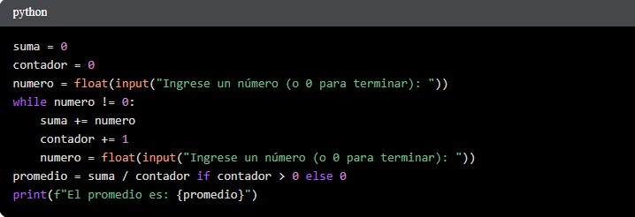
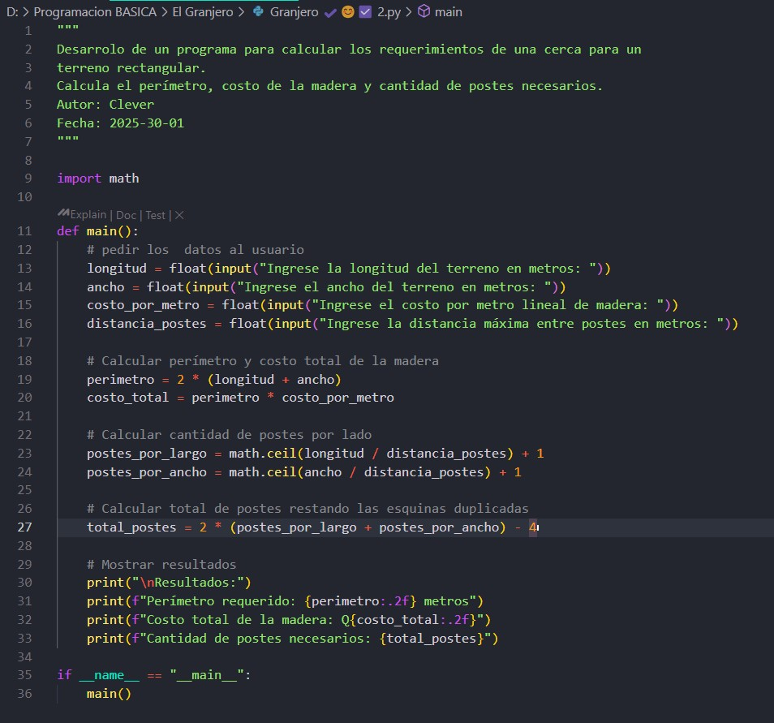

Logros y Aprendizajes del Ciclo
1. Diseño de Aplicaciones y Recopilación de Feedback del Usuario
Introducción a la ProgramaciónEn un proyecto de clase, diseñamos una aplicación móvil similar a Uber, pero adaptada a las necesidades de la comunidad universitaria de la UVG. Este proyecto involucró no solo el diseño de la interfaz de usuario (UI) y la experiencia de usuario (UX), sino también la crucial etapa de recopilar feedback del usuario a través de entrevistas.
Salimos a la universidad a entrevistar a estudiantes sobre nuestra idea. La mayoría recibió positivamente el concepto, sugiriendo que habláramos con las autoridades universitarias para explorar su viabilidad. Sin embargo, algunos estudiantes señalaron similitudes con Uber, expresando dudas sobre su potencial éxito. Esta experiencia me enseñó la importancia de la investigación de usuarios y la validación de ideas a través de la retroalimentación directa.
Nivel de Aprendizaje (Taxonomía de Bloom): Aplicar / Analizar (Apliqué conceptos de diseño UI/UX y analicé el feedback de los usuarios).
2. Fundamentos de Programación en Python
Programación Básica Primer cicloEn la clase de Programación Básica, he consolidado mis habilidades en programación utilizando Python. He realizado varios ejercicios que me han ayudado a comprender conceptos fundamentales como los ciclos `while`, la entrada de datos del usuario y las estructuras condicionales (`if/else`). Aprendí a escribir código de manera lógica y estructurada, resolviendo problemas paso a paso.
Nivel de Aprendizaje (Taxonomía de Bloom): Comprender / Aplicar (Comprendí los principios básicos de programación y los apliqué en la creación de scripts funcionales).
3. Problema de la Cerca
Programación Básica 1 de marzo de 2025En la clase de Programación Básica, se nos planteó un problema que requería integrar conocimientos matemáticos con la programación: calcular los requerimientos para cercar un terreno rectangular. El problema simulaba la situación de un granjero que necesita calcular el perímetro de su terreno, el costo de la madera para la cerca y la cantidad de postes necesarios. Esto requirió que tradujera las fórmulas geométricas para el perímetro y el área a código Python, manejando la entrada del usuario y los cálculos.
Nivel de Aprendizaje (Taxonomía de Bloom): Aplicar / Analizar (Apliqué fórmulas matemáticas a un problema real y analicé cómo traducir la lógica a código Python).
1. Evidencia y Metacognición
Aunque no puedo incluir las grabaciones de las entrevistas, puedo describir la estructura de la misma, incluyendo preguntas abiertas sobre la utilidad de la aplicación, su diseño y sus posibles mejoras. También puedo incluir bocetos de la interfaz de usuario del prototipo VRVG.
Imágenes de Evidencia:
(Puedes insertar imágenes de tus bocetos o un enlace a un prototipo de Figma/MarvelApp aquí si los tienes)
Este proyecto me hizo consciente de la importancia de comprender las necesidades del usuario antes de desarrollar cualquier aplicación. No basta con tener una buena idea; es fundamental validar esa idea con el público objetivo para asegurar su éxito. Aprendí la importancia de la iteración y la adaptación del diseño basado en el feedback recibido. También reflexioné sobre la necesidad de anticipar cómo los usuarios podrían reaccionar o utilizar una nueva solución, incluso si es muy innovadora.
2. Evidencia y Metacognición
A continuación, se presentan ejemplos de código que ilustran algunos de los ejercicios realizados:
Imágenes de Evidencia:

Estos ejercicios me han ayudado a comprender la lógica fundamental de la programación y a desarrollar habilidades para escribir código limpio y eficiente. He aprendido a descomponer problemas en pasos más pequeños y a utilizar estructuras de control de flujo para controlar el flujo de ejecución de un programa. La práctica constante es clave para dominar estos conceptos, y he mejorado mi capacidad de depuración de errores y de entender el impacto de cada línea de código.
3. Evidencia y Metacognición (Problema de la Cerca)
A continuación, se presenta un ejemplo de cómo implementé la solución en Python:
Imágenes de Evidencia:
Este ejercicio me permitió combinar conocimientos de diferentes áreas, como matemáticas y programación. Aprendí a traducir un problema del mundo real en un programa de computadora, teniendo en cuenta variables y posibles errores. La precisión en los cálculos y la claridad del código fueron esenciales para obtener una solución correcta y comprensible. Además, me hizo reflexionar sobre la importancia de documentar el código para que otros puedan entenderlo fácilmente. Este problema me hizo darme cuenta de que la programación no es solo escribir código, sino también comprender el problema y conceptualizar la solución antes de empezar a programar.
4. Evidencia y Metacognición
Como evidencia, tengo una captura de la primera página del plan de negocio que creamos en Word. También puedo describir cómo estructuramos las proyecciones financieras en una hoja de cálculo básica.
Evidencia:
(Puedes insertar aquí la imagen de una diapositiva o un diagrama relevante a tu proyecto, o dejar una descripción detallada.)Este proyecto me hizo dar cuenta de la importancia de la planificación y la investigación rigurosa, incluso en áreas fuera de la tecnología. Aprendí a comunicar ideas complejas de manera efectiva a un público no técnico y a colaborar de manera más organizada dentro de un equipo, asignando responsabilidades y cumpliendo plazos. Me ayudó a mejorar mis habilidades de análisis de información y a pensar críticamente sobre la viabilidad de ideas en el mundo real, desarrollando una perspectiva más holística.